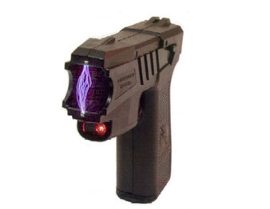

Principles Behind CED Function
The CED is designed to stimulate both the muscular and nervous systems of the human body. When the CED comes into contact with a body part, a relatively small electrical current sends a high frequency of electrical impulses into the muscles causing the muscles to spasm in inefficiently. The recipient feels great pain and is paralyzed as long as the electrical current is applied. The rapid, inefficient muscular contractions caused by the application of the CED deplete the muscles of oxygen and cause excessive build-up of lactate in seconds. The CED also disables nerve impulses that direct muscle movement, causing disorientation, loss of balance, and confusion for several minutes.
A build-up of lactate causes pain, making movement difficult. Oxygen supplies are low during anaerobic respiration, such as during strenuous exercise when energy demand by the muscles is faster than the body can adequately supply oxygen for aerobic respiration. The build-up of lactate allows energy production to continue despite the lack of oxygen. Therefore, extreme exertion results in the painful, burning sensations often felt in working muscles. It is thought that this painful sensation forces a recovery period to occur that allows the body to break down the excessive lactate.
Lactic acid is also produced by a type of bacteria (Lactobacillus bacteria) found commonly in the mouth.
The main internal components of a CED consist of alkaline batteries, an oscillator, a resonant circuit, and a step-up transformer. When the trigger of the CED is pressed, an oscillator converts the energy from the batteries into a stable resonant electrical circuit. A resonant circuit is an electrical circuit that allows the greatest flow of electricity at a certain frequency. The electricity then flows into a step-up transformer that increases the voltage produced by the CED. In modern CEDs, the electrical current is relatively low because most use commonly available alkaline batteries such as AA or 9 volt.
The output voltages of the CED are in the range of 50 000 volts to 900 000 volts, with the most common being between 200 000 volts and 300 000 volts. However, the actual output current released upon contact with a subject is quite small because of factors such as moisture, body salinity, clothing, the CED’s circuitry, battery conditions, and resistance within the subject.